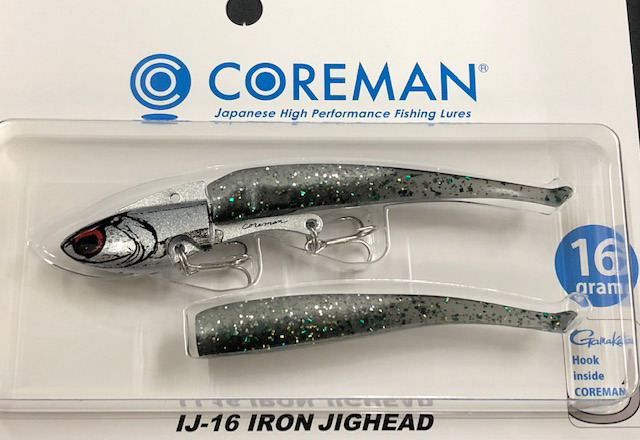
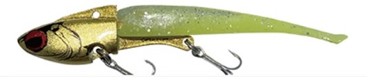
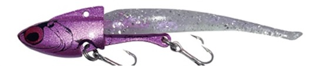

IJ-16
（アイアンジグヘッド）
IJ-16（IRON JIGHEAD 16）はCOREMAN（コアマン）のアイアンジグヘッドです。
鉄板バイブレーションの強波動と集魚力の高さに、ソフトワームならではのナチュラルアクションを融合させた特許取得済みモデル。スローリトリーブとハイスピードリトリーブでアクションの表情が変化する、汎用性の高い1本です。

画像出典:コアマン公式HP
スペック
- メーカー
- COREMAN（コアマン）
- タイプ
- アイアンジグヘッド（鉄板バイブレーション＋ソフトワーム）
- 全長
- 100mm
- ウェイト
- 16g（ジグヘッド）＋2g（ワーム）＝総18g
- フック
- がまかつトレブル13（前#8／後#10）
- リング
- コアマンオリジナル#3
- セットワーム
- アルカリ 70mm
- ターゲット
- シーバス
- 価格
- 1,500円（税別）
▼今すぐチェック

IJ-16の特徴
鉄板バイブの集魚力とソフトワームの食わせ能力を1つにした特許モデル
-
鉄板バイブレーションの強波動と集魚力
金属特有の強い波動とフラッシングで、広範囲の魚にルアーの存在をアピール。濁り潮や広く探りたい状況でも見つけてもらいやすい。
-
ソフトワームならではのナチュラルアクションを融合
鉄板バイブとソフトワームを組み合わせた特許取得済み構造により、硬質なバイブレーションだけでは出せない自然な食わせの間を演出できる。
-
リトリーブ速度でアクションの表情が変化
スローリトリーブでは緩やかなアクション、ハイスピードリトリーブでは激しい動きに変化。高活性時・低活性時どちらにも対応しやすい。
IJ-16の使い方
基本はただ巻き。低活性の魚にはスローリトリーブで緩やかなアクションを見せ、高活性で反射的にバイトさせたい場面ではハイスピードリトリーブに切り替えて激しいアクションでスイッチを入れる。
鉄板バイブ由来の強い波動で広範囲にアピールできるため、まずは広く探ってレンジと活性を把握し、反応が出た層をリトリーブ速度を変えながら丁寧にトレースするのが基本の組み立てです。
IJ-16の得意な状況
濁り潮やローライトで、強めのアピール力が必要な状況が最大の出番。
河口や港内でベイトが広く散っている状況を広範囲にサーチしたい場面や、活性が高い時・低い時でリトリーブ速度を切り替えて対応したい場面に強い。鉄板バイブの集魚力とワームの食わせ能力を1本で使い分けたい時に選びたいジグヘッドです。
ワンポイント
反応が薄い時は、ハイスピードのただ巻きから急にスローダウンさせると、リアクションバイトを誘発しやすくなります。
根掛かりが多いポイントでは、着底直前でリトリーブを開始するとボトムでのロストを減らせます。
オススメカラー
IJ-16は全12色展開。ベイトパターンに合わせて選びやすいオススメカラーを厳選して紹介します。

シルバーヘッド/カタクチイワシ定番のイワシパターン。澄み潮でのナチュラルなアピールに。

ゴールドヘッド/チャートバック濁り潮やマズメ時に強い高アピールカラー。
ゴールド系のフラッシングでベイトパターンに強い反射を加えたい時に。

ケイムラパールケイムラ発光でナイトゲーム・薄暗い時間帯の視認性を高めたい時に。
画像出典:コアマン公式HP
IJ-16に似ているルアー
-
 RJ-10
コアマン
詳細はこちら＞
RJ-10
コアマン
詳細はこちら＞
同じコアマンのジグヘッド＋ソフトワーム。IJ-16が鉄板バイブの強波動、RJ-10がハイピッチローリングと、アクションの質は異なるが同じカテゴリーで使い分けられる兄弟モデル。
-
 VJ-10
コアマン
詳細はこちら＞
VJ-10
コアマン
詳細はこちら＞
同じコアマンのバイブレーションジグヘッド。VJ-10はワームが振動する食わせ系、IJ-16は鉄板バイブの集魚力重視と、状況に応じて持ち替えたい組み合わせ。